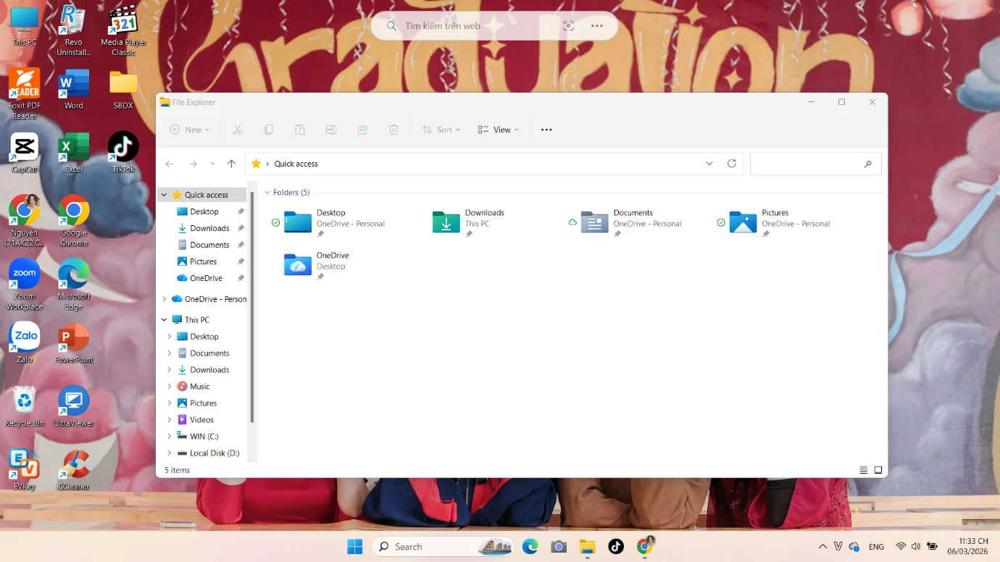
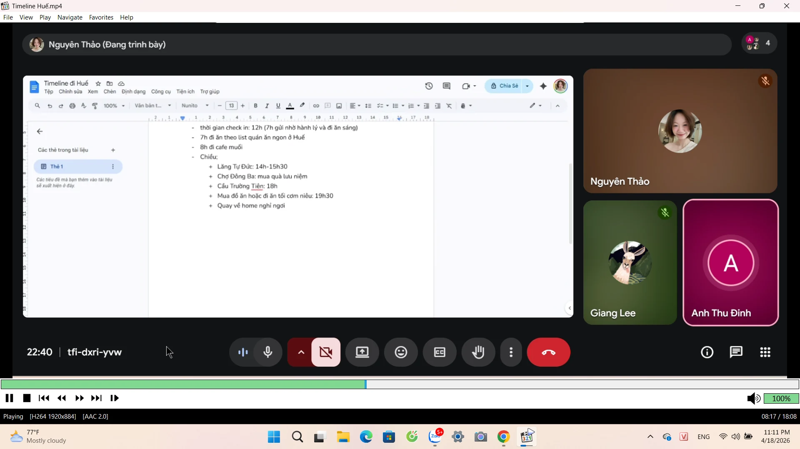
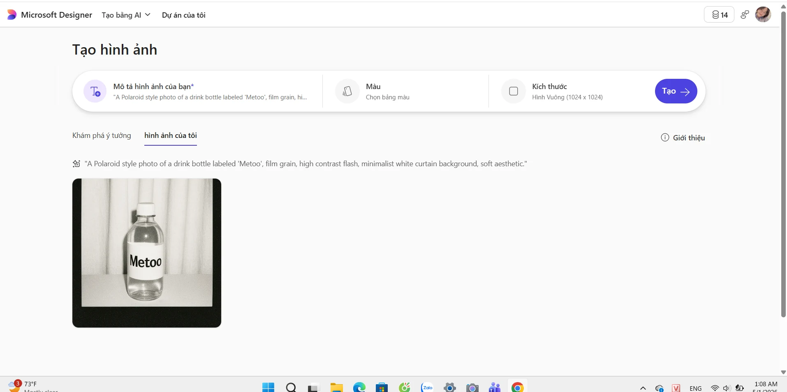
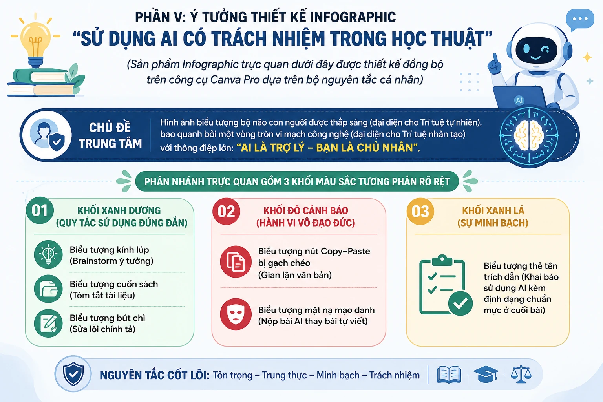

Portfolio · Nhập môn Công nghệ số & AI
Đinh Lê
Thảo Nguyên
Mình là sinh viên Kinh tế và Kinh doanh Quốc tế, quan tâm đến cách công nghệ giúp việc học, nghiên cứu và sáng tạo trở nên có hệ thống hơn.
Một hồ sơ học tập
được xây từ sự tò mò
và tính kỷ luật.
Xin chào thầy cô và các bạn! Mình là Đinh Lê Thảo Nguyên, hiện đang học ngành Kinh tế và Kinh doanh Quốc tế tại Trường Đại học Kinh tế – Đại học Quốc gia Hà Nội.
Mình là người cẩn thận, có tinh thần trách nhiệm và luôn muốn hoàn thiện bản thân qua từng trải nghiệm. Ngoài giờ học, mình thích đọc sách, nghe podcast, tập yoga, nấu ăn và tìm những quán cà phê yên tĩnh để học hoặc thư giãn.
Xây nền tảng kinh tế quốc tế vững chắc, đồng thời phát triển kỹ năng giao tiếp, làm việc nhóm, tư duy phản biện và năng lực sử dụng công nghệ.
Học để hiểu.
Thực hành để làm chủ.
Phản biện để trưởng thành.
02 · Coursework
Sáu bài tập,
một hành trình số.
Nội dung được trình bày theo đúng cấu trúc của bài làm gốc: đoạn chữ, bảng biểu và ảnh minh chứng đặt đúng ngữ cảnh thay vì gom tách rời.

Thao tác cơ bản với tệp tin và thư mục
Thực hành quản lý tệp tin theo quy trình.
Xem bài →Tìm kiếm và đánh giá thông tin học thuật
Đánh giá nguồn học thuật về tác động của mạng xã hội.
Xem bài →
Sử dụng công cụ hợp tác trực tuyến
Vai trò trưởng nhóm trong dự án so sánh các mô hình ngôn ngữ lớn.
Xem bài →Viết Prompt hiệu quả cho tác vụ học tập
Tối ưu hóa tác vụ học tập bằng prompt cơ bản, cải tiến và nâng cao.
Xem bài →
Sử dụng AI tạo sinh hỗ trợ sáng tạo nội dung
Quy trình xây dựng bộ ấn phẩm Marketing cho sản phẩm Metoo.
Xem bài →
Sử dụng AI có trách nhiệm trong học tập
Bộ nguyên tắc sử dụng AI minh bạch và có trách nhiệm.
Xem bài →Tự động hóa quy trình chào mừng thành viên CLB
Google Forms → Zapier → Gmail
“Công nghệ chỉ thật sự có giá trị khi mình biết đặt câu hỏi đúng, kiểm chứng thông tin và biến kết quả thành hiểu biết của chính mình.”
Đọc tổng kết cá nhân